Inside a Neural Network
A 14-slide visual presentation that explains the six building blocks of a neural network, backed by my own experiments in the TensorFlow Playground.
Introduction
This is my second portfolio artifact, for Workshop 2.4. Neural networks are described everywhere as black boxes, and I wanted to see inside one. In my Salesforce work I use models through Einstein and Agentforce without ever seeing their internals, so this was a chance to understand what is actually happening between the input and the prediction.
Description
The artifact is a 14-slide deck. It opens with one diagram of a whole network, then gives each of the six components its own slide: layers, neurons, weights, activation functions, loss functions and optimization algorithms. After a slide on the training loop come three slides of results from my Playground experiments, and a summary slide on why visualizing networks helps.
Objective
To define each component clearly, show how data flows from input to output, and back every explanation with something I observed myself rather than only a textbook definition.
Process
- Practiced in the TensorFlow Playground, changing one setting at a time: data set, noise, hidden layers, input features, activation function and learning rate.
- Ran 13 configurations with the same random seed for about 500 epochs each, and recorded training and test loss so runs could be compared fairly.
- Drew the architecture, neuron, activation and gradient descent diagrams from scratch so each one shows a specific idea.
- Wrote each explanation in plain language, then added the matching result from my own runs.
- Built the slides in HTML and CSS, exported them as images, a PDF and a PowerPoint file, and checked the text size and contrast.
Tools
- TensorFlow Neural Network Playground for the experiments and screenshots.
- HTML, CSS and SVG for the slides and diagrams, and Playwright to export them as images and PDF.
- Python to automate the experiment runs and read the loss values.
- An AI assistant (Claude) to help with the code and first drafts. I checked each explanation against my sources and my own results and edited the wording.
Value Proposition
It shows that I can take a technical topic, test it hands on, and explain it simply. Teams that adopt AI need people who can say why a model is behaving a certain way, not only which tool to click.
Unique Value
Artifact 1 was about choosing between algorithms. This one goes inside a single algorithm family. Every component slide pairs a definition with a number from an experiment I ran, such as ReLU reaching a test loss of 0.006 against 0.293 for sigmoid on the same network. I also state the limits: the Playground is a small two-dimensional toy and shows concepts, not the behavior of large systems.
Relevance
Agentforce and Einstein rely on neural networks, and large language models are built from the same parts at a much larger scale. Knowing what weights, activations and a learning rate do helps me ask better questions of data science teams and explain model behavior to business stakeholders. It also connects to the Python and NLP work in my other courses.
Visual Presentation
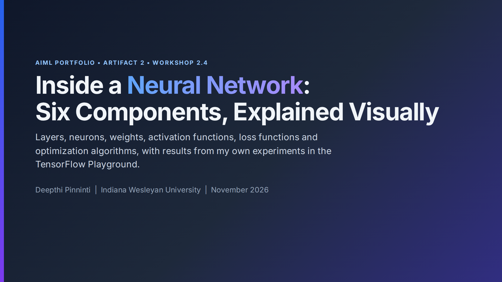
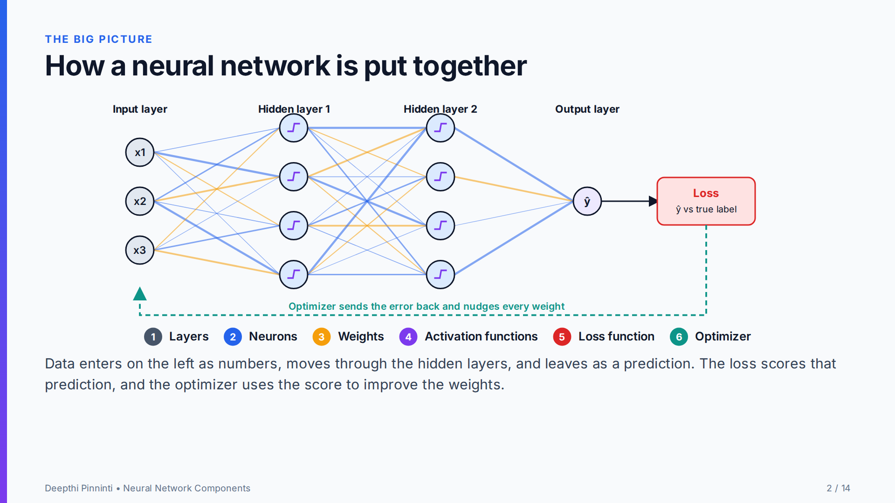
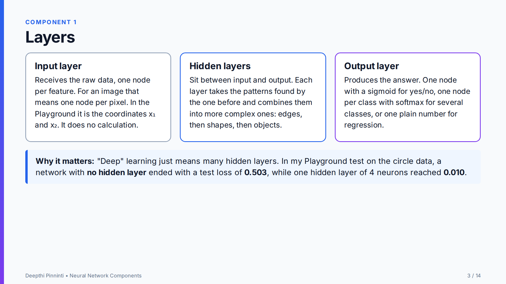
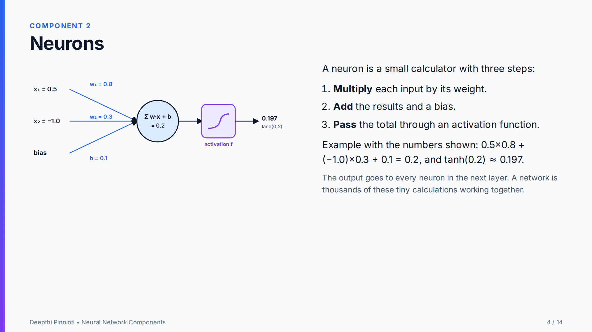
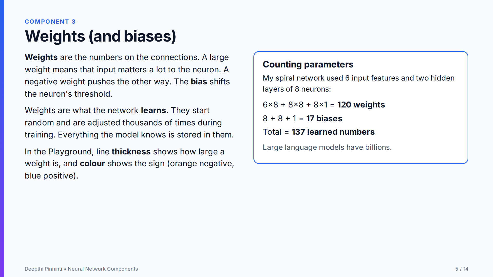
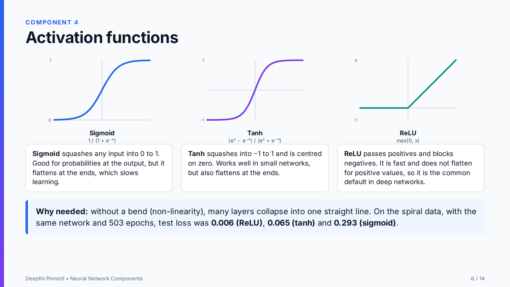
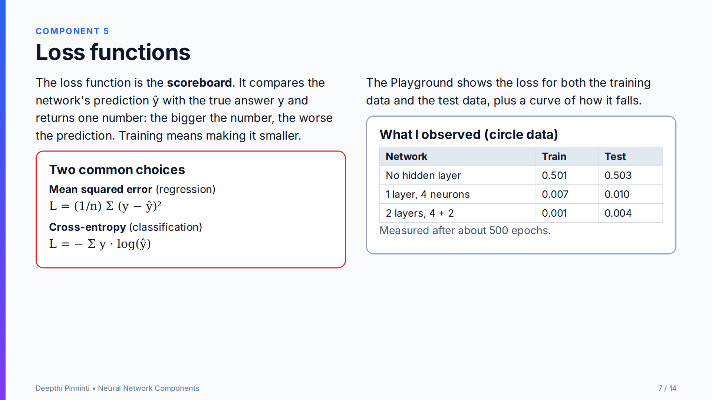
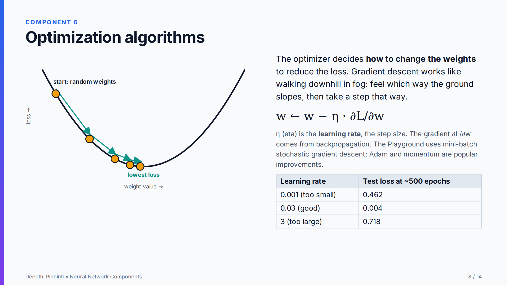
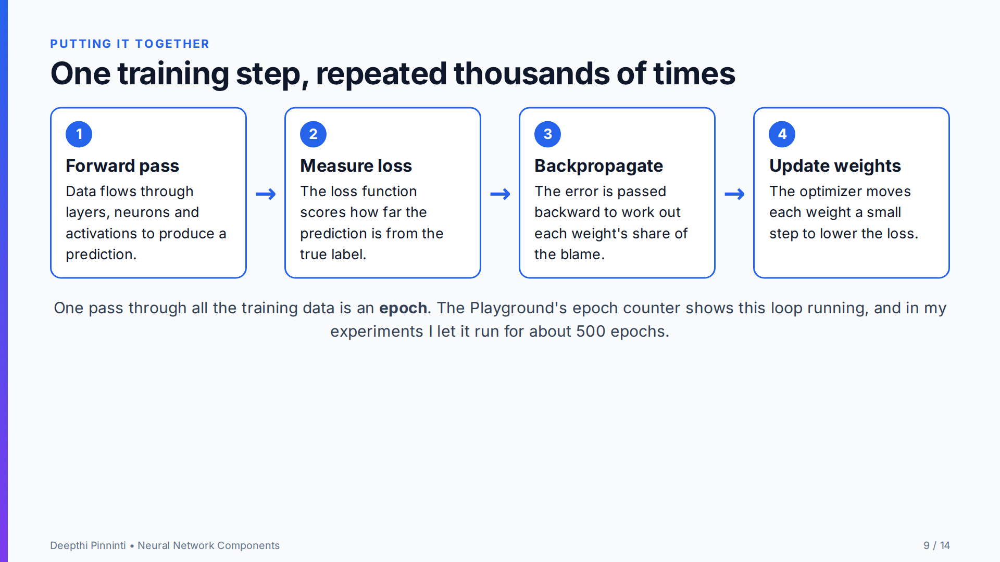
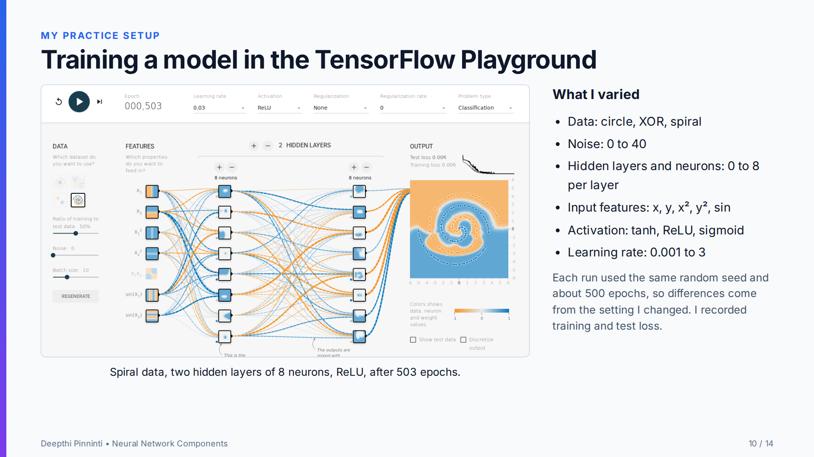
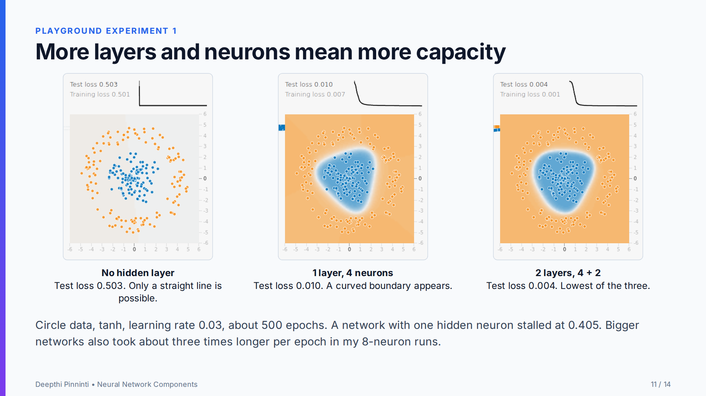
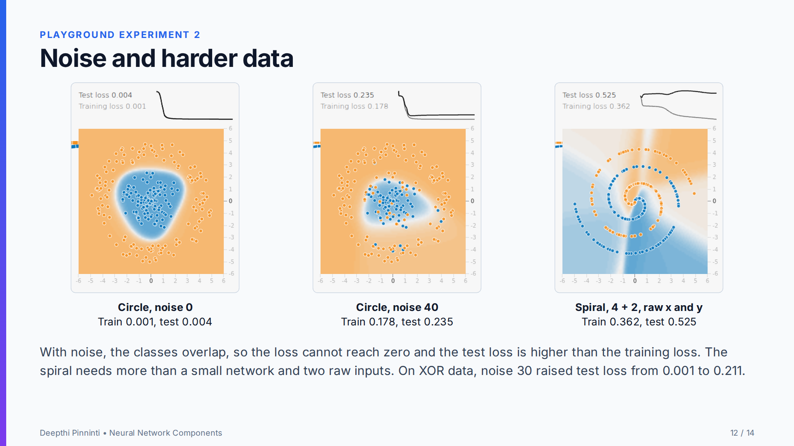
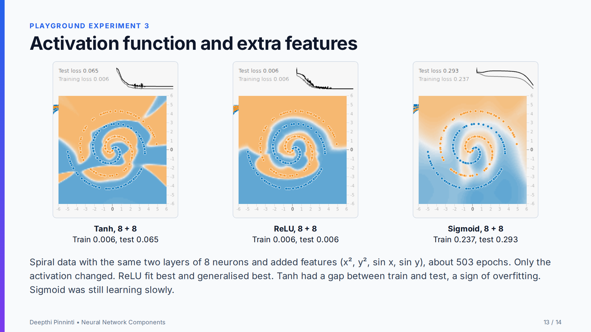
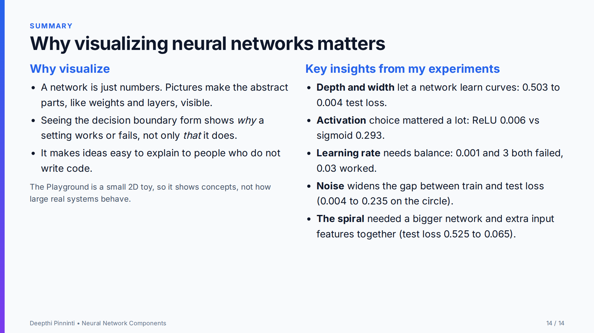
Use the arrow keys or the buttons to move between slides. The PowerPoint file holds each slide as an image with speaker notes.
The six components at a glance
| Component | What it is | What it does | What I observed |
|---|---|---|---|
| Layers | Input, hidden and output stages of the network | Hidden layers build patterns from simple to complex | 0.503 test loss with none, 0.010 with one layer of 4 |
| Neurons | Small calculators: weighted sum plus bias, then an activation | Each neuron detects one pattern in its inputs | Worked example: 0.2 becomes 0.197 after tanh |
| Weights | Learned numbers on the connections | Store everything the network knows | 137 parameters in my spiral network |
| Activation functions | Sigmoid, tanh and ReLU: non-linear bends | Without them, layers collapse into one line | ReLU 0.006, tanh 0.065, sigmoid 0.293 on the spiral |
| Loss functions | Mean squared error or cross-entropy | Give one number for how wrong the prediction is | Train 0.501 down to 0.001 as layers were added |
| Optimization algorithms | Gradient descent and its variants, step size set by the learning rate | Decide how weights change to lower the loss | Learning rate 0.001: 0.462, 0.03: 0.004, 3: 0.718 |
What I Found in the Playground
Every run used the same random seed, a learning rate of 0.03 unless stated, and about 500 epochs. Loss is the Playground's test loss; lower is better.
| Setting changed | Configuration | Train loss | Test loss |
|---|---|---|---|
| Layers (circle data, tanh) | No hidden layer | 0.501 | 0.503 |
| 1 layer, 1 neuron | 0.407 | 0.405 | |
| 1 layer, 4 neurons | 0.007 | 0.010 | |
| 2 layers, 4 + 2 neurons | 0.001 | 0.004 | |
| Noise (circle, 4 + 2) | Noise 0 | 0.001 | 0.004 |
| Noise 40 | 0.178 | 0.235 | |
| Data set | XOR, 4 + 2, no noise | 0.001 | 0.001 |
| XOR, 4 + 2, noise 30 | 0.125 | 0.211 | |
| Spiral data | 4 + 2, tanh, raw x and y | 0.362 | 0.525 |
| 8 + 8, tanh, extra features | 0.006 | 0.065 | |
| 8 + 8, ReLU, extra features | 0.006 | 0.006 | |
| 8 + 8, sigmoid, extra features | 0.237 | 0.293 | |
| Learning rate (circle, 4 + 2) | 0.001 | 0.473 | 0.462 |
| 0.03 | 0.001 | 0.004 | |
| 3 | 0.686 | 0.718 |
The extra features were x², y², sin(x) and sin(y). In the spiral rows I changed the network size and the features together, so that jump cannot be credited to one of them alone. These are single runs, so the exact numbers would shift with another seed.
Artifact Reflection
Lessons Learned
Going into this assignment I thought of a neural network as a black box that somehow learns. Building the presentation and running experiments in the TensorFlow Playground changed that. The most useful moment was training a network with no hidden layers on the circle data and watching the test loss stay at about 0.5, then adding four neurons and seeing it drop to 0.01. Reading that layers add capacity is one thing. Seeing it happen is another.
I also learned how much the small settings matter. With the same network on the spiral data, ReLU reached a test loss of 0.006 while sigmoid was still at 0.293, and a learning rate of 3 left the model worse than a network with no hidden layers at all. Noise had a similar effect: the circle went from a test loss of 0.004 to 0.235 once I added noise.
The hardest part was explaining each component simply without getting it wrong. Weights and loss functions are easy to define but hard to picture, so I drew diagrams for the neuron, the activation curves and gradient descent, and I counted the 137 parameters in my spiral network by hand. I was also careful about what my experiments can prove. In the spiral runs I changed the network size and the inputs together, so I said that on the slides instead of crediting one of them.
Next time I would test regularization and overfitting, because some runs fit the training data much better than the test data. The main lesson is that visualizing a network turns it into something I can reason about and explain, which is what I need when I work with AI teams in my job.
Audience Customization
The deck is written for classmates, instructors and hiring managers who have heard of neural networks but have not trained one. Each component gets a plain-language definition, one picture and one number from my experiments, and the formulas are kept to the one or two a reader would meet first.
Feedback and Revisions
This artifact has not had a peer review yet. While building it I enlarged the Playground screenshots so the loss values can be read, removed a claim I had not tested, and added a note that two settings changed together in the spiral runs. After a review I would add a short section on overfitting and regularization.
References
- Goodfellow, I., Bengio, Y., & Courville, A. (2016). Deep learning. MIT Press. https://www.deeplearningbook.org/
- Rumelhart, D. E., Hinton, G. E., & Williams, R. J. (1986). Learning representations by back-propagating errors. Nature, 323(6088), 533–536.
- Smilkov, D., Carter, S., Sculley, D., Viégas, F. B., & Wattenberg, M. (2017). Direct-manipulation visualization of deep networks. arXiv. https://arxiv.org/abs/1708.03788
- TensorFlow. (n.d.). A Neural Network Playground [Computer software]. https://playground.tensorflow.org/